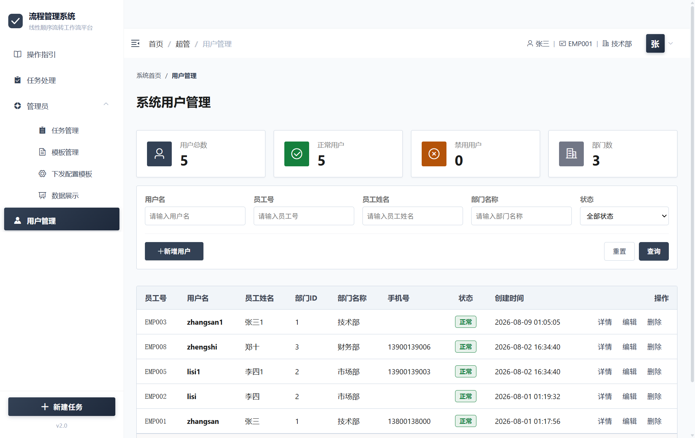
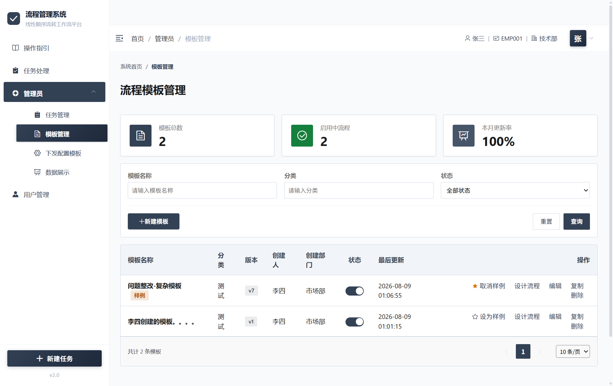
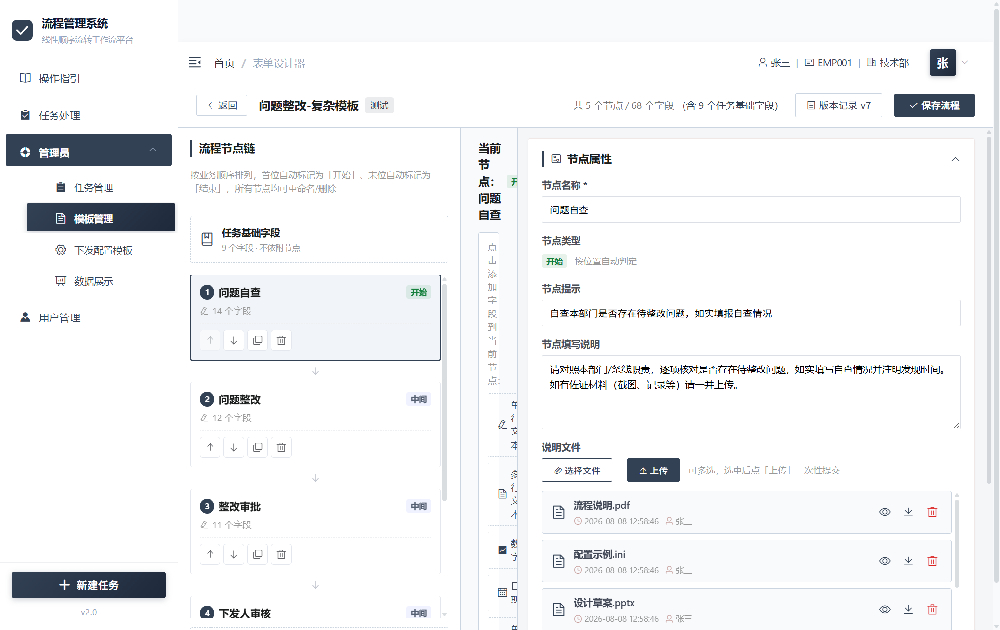
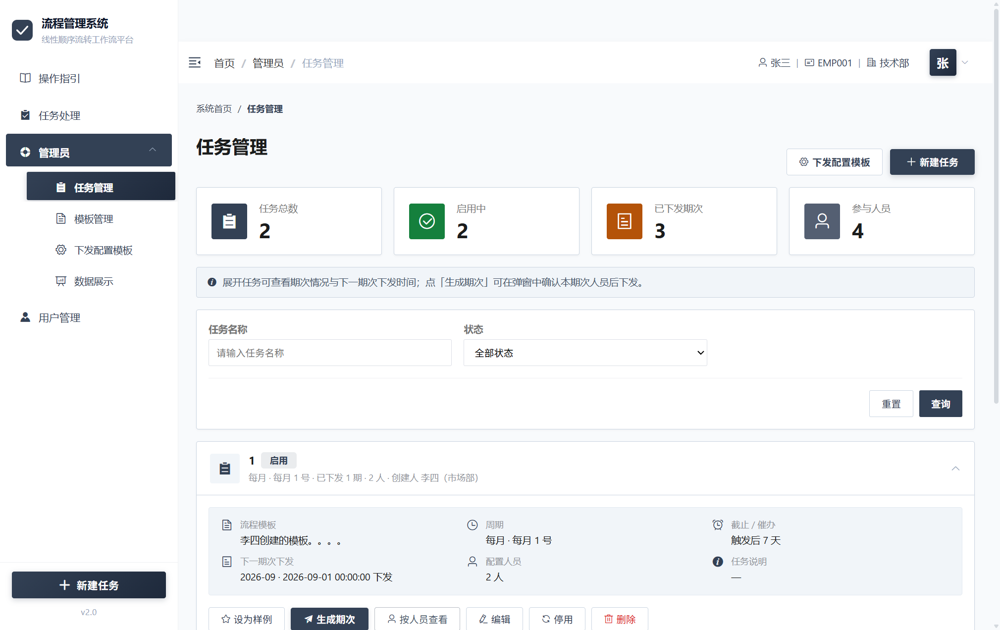
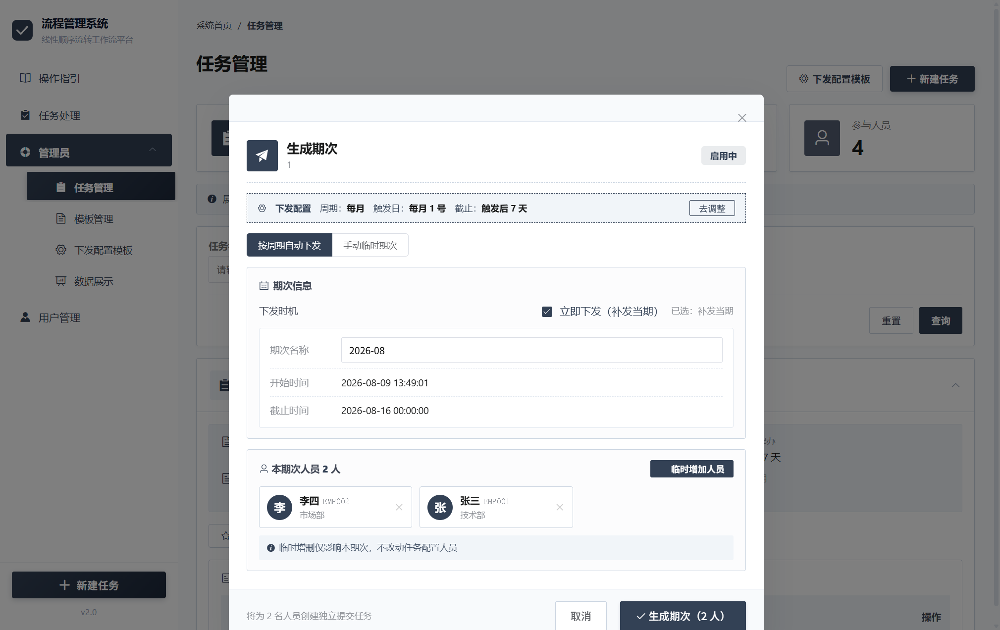
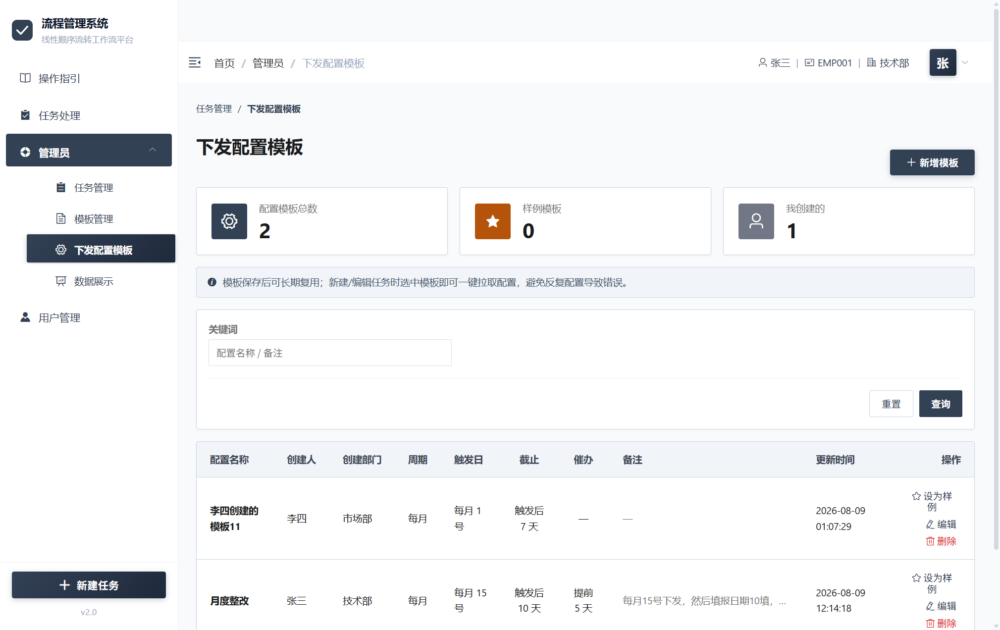
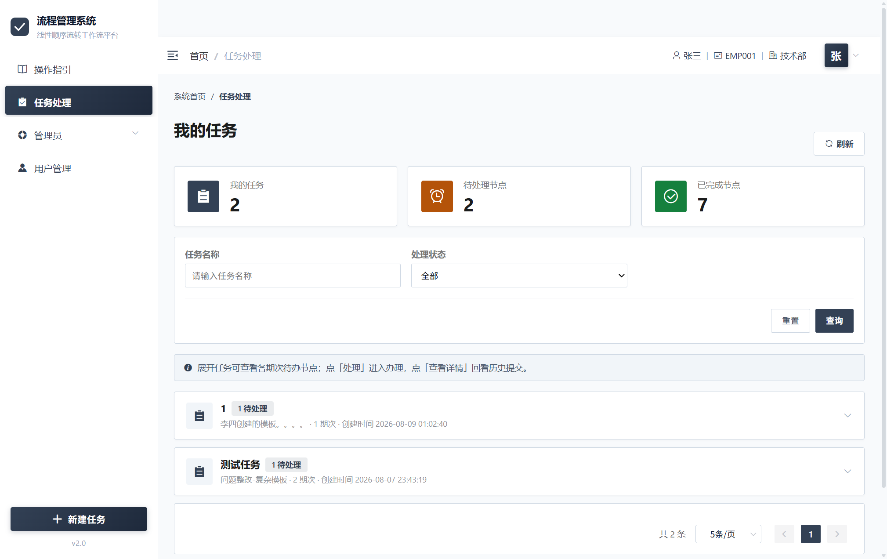
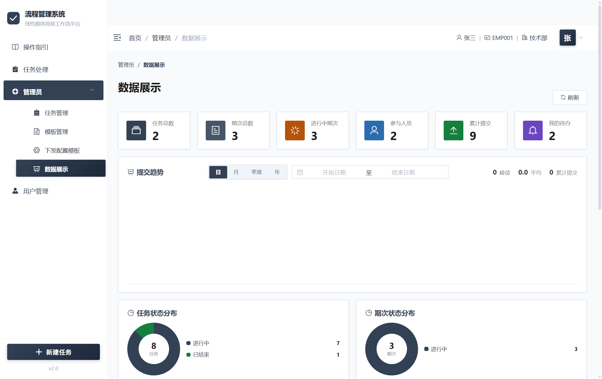
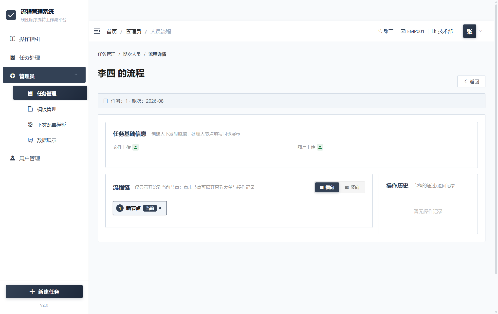
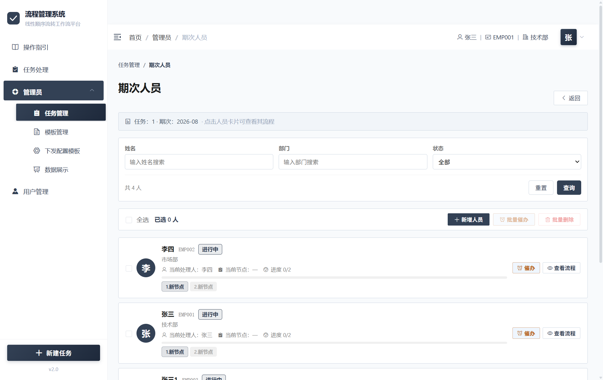

线性顺序流转工作流系统
快速上手 · 五步走
不想看长篇文档？只需要记住下面 5 个步骤，就能理解整个系统的运转方式：
配填写字段
选处理人员
每人一条待办
提交 / 退回
流程下钻
- 模板要启用，否则新建任务时选不到。
- 任务要启用并生成期次，处理人才会收到待办。
- 每个中间节点必须指定下一节点处理人，流程才能往下走。
第一章 · 系统概述
本系统是一套线性顺序流转工作流平台。简单来说：管理员先画好一张"流程图"（模板），再创建一个"任务"并指派处理人员；系统会按期自动给每位人员发一条待办，人员按流程顺序一步一步填写、提交、流转——从"开始"节点直到"结束"节点，任务完成。
这不是"多人同时填一张表"，而是"一份表单在多人之间按顺序传递填写"——张三填完第 1 步交给李四，李四填完第 2 步交给王五……一步一步往前走。
系统整体使用流程
下面的链路图是整个系统的核心运转逻辑，建议先看这一张图：
节点 + 字段
配置周期与人员
（可自动下发）
独立完整流程
直到结束节点
1.1 核心概念
流程模板
业务"图纸"：定义流程有几个步骤（节点），每个步骤要填哪些字段。支持版本管理和复制。
任务
基于模板创建的具体工作项。配置了什么人、按什么周期、什么时候截止。
期次
任务按周期生成的每一轮。比如"每月 1 号下发"的任务，2026 年 8 月就是一期。
人员任务
每个处理人在某一期次中需要独立完成的完整流程。一期有多少人，就有多少条人员任务。
节点
流程中的每一步。分为开始节点、中间节点、结束节点。每个节点可以设置不同的填写字段。
流转
当前节点填完后，提交给下一节点的人继续。支持正常通过和退回重做。
假设公司每月要做一次"项目进度汇报"：
- 管理员创建模板：项目填表人 → 组长审核 → 部门汇总
- 创建任务"月度项目报告"，人员选了张三、李四、王五，周期"每月"。系统每月 1 号自动为三人各生成一条任务。
- 张三打开待办，填好项目数据，提交给组长赵六。
- 赵六审核后提交给部门汇总人。
- 汇总人汇总后提交，流程结束。
1.2 角色与权限
| 角色 | 主要能做什么 | 对应菜单 |
|---|---|---|
| 超级管理员 | 管理系统用户、设置样例模板/任务 | 超管 → 用户管理 |
| 流程管理员 | 设计模板与表单、创建任务、配置周期与人员、生成期次、查看数据 | 管理员 → 任务管理 / 模板管理 / 数据展示 |
| 处理人 | 接收待办任务、填写表单、提交/退回流程 | 任务处理 |
1.3 菜单导航
登录后，左侧菜单栏按照角色展示不同模块：
所有用户都能看到全部菜单，但具体页面的数据由后端根据登录用户角色自动过滤，超管和管理员能操作全部数据，处理人只能看到自己的待办。
第二章 · 管理员操作
本章面向超级管理员和流程管理员，介绍如何配置用户、设计模板、创建任务、下发期次。
2.1 用户管理
菜单位置：超管 → 用户管理。仅超级管理员可操作，用于管理系统用户账号。

- 进入"用户管理"页面，点击「新增」按钮。
- 填写信息：账号（登录名）、员工号、真实姓名、部门、手机号、密码。
- 状态选择「正常」后，该用户即可登录系统，也会出现在处理人选人列表中。
- 点击保存。
- 在用户列表中，点击操作列的编辑图标可修改用户信息。
- 点击删除图标可删除用户。删除后该用户无法登录，但历史数据保留。
系统预置了 5 个测试用户，方便测试多人流转场景。
2.2 模板管理
菜单位置：管理员 → 模板管理。流程模板是系统的核心"图纸"，所有任务都必须基于模板创建。

- 进入"模板管理"页面，点击「创建模板」按钮。
- 填写模板名称、分类、简要说明。
- 保存后，自动进入表单设计器（见 2.3 节）设计流程节点和字段。
| 操作 | 说明 |
|---|---|
| 设计 | 点击进入表单设计器，编辑流程节点与字段。 |
| 启用 / 停用 | 切换状态开关。停用后不能用于创建新任务，但已下发的任务不受影响。 |
| 复制 | 快速复制一份完全相同的模板（含节点与字段），方便在不同场景间复用。 |
| 删除 | 仅当模板未被任何任务引用时才可删除。 |
2.3 表单设计器
从模板管理列表点击「设计」进入。设计器是创建和编辑流程的核心工具，采用三栏布局。

| 区域 | 位置 | 功能 |
|---|---|---|
| 节点链 | 左侧 | 显示流程的全部节点。每个节点显示名称、类型徽章、包含的字段数。可上下拖拽调整顺序、点击删除。 |
| 字段画布 | 中间 | 当前选中节点的字段列表。可点击添加字段、拖拽排序、删除。 |
| 属性面板 | 右侧 | 上半部分：当前节点的属性（名称、类型、填写提示、说明文件）。下半部分：当前选中字段的属性（字段标签、占位提示、是否必填、最大长度、枚举选项等）。 |
-
新建节点
在节点链区域添加节点。首节点自动设为"开始节点"，最后位置自动为"结束节点"，中间的为"中间节点"。
-
为每个节点添加字段
选中一个节点，在中间画布区添加该节点需要处理的字段。
-
配置字段属性
选中一个字段，在右侧面板设置字段标签、输入提示、是否必填等。
-
设置节点属性
为每个节点设置名称、填写说明、下一步处理人提示语、可上传的说明文件。
-
保存流程
点击右上角「保存流程」按钮，选择"保存到当前版本"或"保存为新版本"。
字段类型一览
| 类型 | 说明 | 支持必填 |
|---|---|---|
| 单行文本 | 短文字输入，如姓名、编号 | 是 |
| 多行文本 | 长文字输入，如备注、说明 | 是 |
| 数字 | 整数或小数，如金额、数量 | 是 |
| 日期 | 日期选择器 | 是 |
| 单选 | 从预设选项中选一个，如状态、级别 | 是 |
| 多选 | 从预设选项中选多个 | 是 |
| 文件 | 上传附件 | 是 |
| 图片 | 上传图片 | 是 |
首节点必须是"开始节点"，末节点必须是"结束节点"。中间节点至少保留一个，否则无法构成完整的流程链。
保存为新版本时，旧配置会归档到版本记录中，方便回溯。模板升级不会影响已下发任务——历史期次使用的是下发时的版本快照。
2.4 任务管理
菜单位置：管理员 → 任务管理。基于模板创建任务，配置周期和人员后，系统即可按期自动下发。

-
进入新建任务
在任务管理页面点击「新建任务」按钮。
-
选择模板并填写基本信息
选择流程模板（仅显示已启用的模板）。填写任务名称、任务说明。如有模板级配置字段（任务级别统一设定的值），在此一并填写。
-
配置下发周期
选择周期类型：每周 / 每月 / 每季度 / 单次。设置触发日、每期截止天数、提前催办天数。也可以从"下发配置模板库"一键拉取常用配置（见 2.6 节）。
-
配置处理人员
从用户列表中选择处理人。任务创建后人员可随时增减。
-
保存
点击保存返回任务管理页。任务默认为停用状态，需要手动启用才会开始按周期下发。
| 操作 | 说明 |
|---|---|
| 启用 / 停用 | 启用后定时任务才会按周期自动下发期次。停用后不再生成新期次，但已下发的继续有效。 |
| 编辑 | 修改任务基本信息和下发配置。 |
| 生成期次 | 手动生成一期任务（见 2.5 节）。 |
| 人员管理 | 增减任务的处理人员。新增人员会在下个期次开始收到待办。 |
2.5 期次下发
在任务管理页展开某个任务后，可以看到该任务下的所有期次。生成期次后，系统才会为每位处理人创建实际的待办任务。

| 方式 | 适用场景 |
|---|---|
| 立即下发 | 生成当前应下发的期次。比如每月 1 号下发，今天 8 月 6 号才操作，系统会补发 2026-08 期次。 |
| 下一期次下发 | 提前生成下一个周期的期次，如提前生成 2026-09 期次。 |
| 手动临时期次 | 自定义期次名称和起止时间，用于特殊情况。不影响后续自动下发编排。 |
- 在任务管理页展开目标任务。
- 点击「生成期次」按钮。
- 选择生成方式，确认人员列表（默认抄用任务配置的人员，可临时增减本期次人员）。
- 点击「确认下发」。系统会为每位人员创建一条独立的待办任务。
期次管理
展开任务后可以看到期次列表，每行显示期次名、成员数、状态、起止时间。可进行的操作：
- 查看人员：进入期次人员页，查看每位成员的处理进度和当前节点。
- 修改截止时间：调整特定期次的截止日期。
- 删除期次：删除无人员任务的空期次。
启用状态的任务，系统每天上午 8:00 自动检查并下发到期期次。不需要每次手动操作。
期次截止时间仅用于展示与催办提醒。超过截止时间后处理人仍可正常处理，界面会显示"已超期"标识；超期提交的节点记录会标注"超期处理"，不影响流程流转。
2.6 下发配置模板
菜单位置：管理员 → 下发配置模板。如果同一个周期配置要反复使用（比如"每月 1 号下发，7 天截止，提前 2 天催办"），可以将其保存为配置模板，创建新任务时一键拉取，避免每次手动填写。

配置模板支持增删改查，删除模板不影响已拉取到任务上的配置。
第三章 · 处理人操作
本章面向处理人，介绍如何在"任务处理"页面完成待办事项。
3.1 我的待办
菜单位置：任务处理。登录后默认进入此页面，显示当前用户作为处理人的全部待办。
任务按来源分组展示，每项包含：任务名称、期次、当前节点、截止时间。点击「处理」按钮进入处理界面。

3.2 填写表单
点击「处理」后打开的弹窗包含以下区域：
| 区域 | 说明 |
|---|---|
| 任务信息 | 顶部显示期次名、任务名、截止时间等。超过截止时间会提示"已超期"，但仍可正常处理。 |
| 流程链 | 可切换横向/竖向：横向点击节点查看单个节点填写内容，竖向可同时展开多个节点对照查看。 |
| 节点说明 | 管理员在模板中为本节点配置的填写说明文字和附件。 |
| 动态表单 | 核心区域，根据当前节点的字段配置渲染输入控件。红色星号表示必填项。 |
| 操作历史 | 右侧时间线，显示该流程的通过、退回记录和意见。 |
3.3 提交与流转
- 确认所有必填字段（红色星号）已填写完整。
- 如果当前节点不是"结束节点"，需要指定下一节点处理人——从用户列表中选择一人。
- 点击「通过」按钮，在确认弹窗中点击确定。
- 提交成功后，该节点标记为已完成，下一节点处理人会收到待办通知。
如果某个节点配置了多名处理人：任一人提交即算该节点完成，其他人的待办会自动消解，避免重复流程。
3.4 退回与草稿
- 在表单页点击「退回」按钮。
- 选择退回目标节点（仅可选择流程中已经到达过的前置节点）。
- 填写退回原因（选填但不建议为空），提交后目标节点处理人重新收到待办。
- 退回后表单数据保留，处理人可修改后重新提交。
- 点击「暂存」按钮可保存当前填写内容。
- 暂存不校验必填字段，不触发流转。
- 下次从待办列表点击"处理"进入时，草稿内容会自动回填，可继续编辑。
第四章 · 数据监控
菜单位置：管理员 → 数据展示。管理员可在此查看全局填报数据、趋势、人员提交情况，并下钻到具体流程详情。

4.1 数据展示看板
| 功能模块 | 说明 |
|---|---|
| 统计卡 | 顶部展示总提交次数、待处理数量、完成率、任务总数、进行中期次等关键指标。 |
| 提交趋势 | 按日/月/季度/年展示提交量变化折线图。 |
| 数据提交明细 | 表格列出每条填报记录，包含状态、提交人、模板、时间，支持筛选导出。 |
| 人员提交汇总 | 按人员统计提交次数、完成率、平均处理时长，方便评估工作量。 |
| 流程详情下钻 | 从任务管理 → 期次人员 → 「查看流程」，可查看某人完整的节点链、每步表单数据、操作历史。 |

4.2 催办
在期次人员页，对进行中的成员可点击「催办」按钮。系统每天上午 9:00 也会根据任务配置的"提前催办天数"自动催办即将到期的任务。

第五章 · 常见问题
| 问题 | 解决方法 |
|---|---|
| 登录失败 | 确认账号密码正确（默认密码 123456）。如忘记密码，联系超级管理员重置。 |
| 创建任务时找不到模板 | 确认模板已"启用"。停用状态的模板不会出现在任务创建的选择列表中。 |
| 任务创建了但没人收到待办 | 检查两步：① 任务是否已启用；② 是否已生成期次。仅创建任务不生成期次时，处理人不会收到待办。 |
| 退回后流程似乎卡住了 | 退回后目标节点的处理人需要重新处理并提交。确认目标节点处理人已收到待办。 |
| 期次没有自动生成 | 检查：① 任务是否启用；② 周期配置是否正确；③ 系统每天 8:00 自动执行，如果刚创建可以手动"立即下发"。 |
| 提交时提示"该节点已被处理" | 同一节点的多位处理人中已有人先提交了，这条待办已自动消解，无需处理。 |
| 想删除模板但提示有引用 | 该模板已被某个任务使用。需要先删除或更换引用此模板的任务，才能删除模板。 |
| 保存了模板但任务下发的还是旧流程 | 已下发的任务使用的是下发时的版本快照，模板修改不会影响已有期次。如需让新一期使用新流程，生成新期次即可——新期次会自动使用模板最新版本。 |
| 期次截止时间过了还能处理吗 | 可以。截止时间仅用于展示与催办，超期后仍可正常提交，界面会显示"已超期"标识，节点记录标注"超期处理"。 |